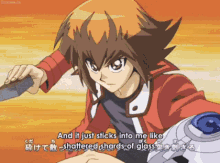
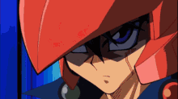

The Heart of the Cards
A card game that relies on luck and strategic planning to overpower your opponents, through various summonings to bring forth powerful monsters, who will be the next King of Games?
It's time to d-d-d-d-d-d-duel!

Quicklinks: Timeline, Medias, Games
Yu-Gi-Oh Anime & Manga Timeline
This timeline does not include the movies, see Media.
Before you proceed with the list, keep in mind that the Anime and Manga are not exact plot verbatim.
Yu-Gi-Oh & Yu-Gi-Oh Duel Monster
Yu-Gi-Oh

Yu-Gi-Oh the Tv Anime Series (1998) not to be confused with Yu-Gi-Oh Duel Monster Tv Anime series (2000) follows the original manga adaptation, the story is much darker with focus on a cast of charaters more than dueling with monsters. It is also called Season 0 by fans, each episode will revolve around Yugi and his group of friends eventually dark yugi will take over and challenge
Yugioh Duel Monsters

This anime series is the most well recognized within online spheres, the first pilot episode while runs through the established friend circle of Yugi Muto to take back his grandpa
You can watch of all of season 1 here
Yu-Gi-Oh GX
You can watch GX here
Yu-Gi-Oh 5DS
You can watch 5DS here
Yu-Gi-Oh Zexal

You can watch Zexal here
Yu-Gi-Oh Arc V

Yu-Gi-Oh VRains

Yu-Gi-Oh Sevens

Yu-Gi-Oh GO

Media
Games

You can play several Yu-Gi-Oh card games through mobile or on various platforms
This took a big chunk of time and research alongside the creation of the website, and while it is not a concise guide containing all the nook and cranny of details, it came with some sacrifice. Hope it was an enjoyable read, and don’t mind any mistakes, this was a one person made project.